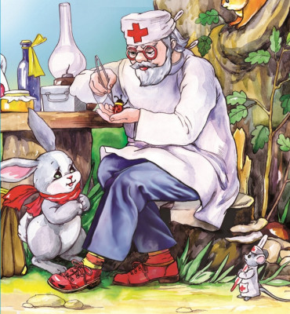

Добрый доктор Айболит!
Он под деревом сидит.
Приходи к нему лечиться
И корова, и волчица,
И жучок, и червячок,
И медведица!
Всех излечит, исцелят
Добрый доктор Айболит!
И пришла к Айболиту лиса:
"Ой, меня укусила оса!"
И пришёл к Айболиту барбос:
"Меня курица клюнула в нос!"
И прибежала зайчиха
И закричала: "Ай, ай!
Мой зайчик попал под трамвай!
Мой зайчик, мой мальчик
Попал под трамвай!
Он бежал по дорожке,
И ему перерезало ножки,
И теперь он больной и хромой,
Маленький заинька мой!"
И сказал Айболит: "Не беда!
Подавай-ка его сюда!
Я пришью ему новые ножки,
Он опять побежит по дорожке".
И принесли к нему зайку,
Такого больного, хромого,
И доктор пришил ему ножки.
И заинька прыгает снова.
А с ним и зайчиха-мать
Тоже пошла танцевать.
И смеётся она и кричит:
"Ну, спасибо тебе, Айболит!"
Вдруг откуда-то шакал
На кобыле прискакал:
"Вот вам телеграмма
От Гиппопотама!"
"Приезжайте, доктор,
В Африку скорей
И спасите, доктор,
Наших малышей!"
"Что такое? Неужели
Ваши дети заболели?"
"Да-да-да! У них ангина,
Скарлатина, холерина,
Дифтерит, аппендицит,
Малярия и бронхит!
Приходите же скорее,
Добрый доктор Айболит!"
"Ладно, ладно, побегу,
Вашим детям помогу.
Только где же вы живете?
На горе или в болоте?"
"Мы живем на Занзибаре,
В Калахари и Сахаре,
На горе Фернандо-По,
Где гуляет Гиппо-по
По широкой Лимпопо.
И встал Айболит, побежал Айболит.
По полям, по лесам, по лугам он бежит
.
И одно только слово твердит Айболит:
"Лимпопо, Лимпопо, Лимпопо!"
А в лицо ему ветер, и снег, и град:
"Эй, Айболит, воротися назад!"
И упал Айболит и лежит на снегу:
"Я дальше идти не могу".
И сейчас же к нему из-за ёлки
Выбегают мохнатые волки:
"Садись, Айболит, верхом,
Мы живо тебя довезём!"
И вперёд поскакал Айболит
И одно только слово твердит:
"Лимпопо, Лимпопо, Лимпопо!"
Но вот перед ними море —
Бушует, шумит на просторе.
А в море высокая ходит волна,
Сейчас Айболита проглотит она.
"Ой" если я утону,
Если пойду я ко дну.
Что станется с ними, с больными,
С моими зверями лесными?"
Но тут выплывает кит:
"Садись на меня, Айболит,
И, как большой пароход,
Тебя повезу я вперёд!"
И сел на кита Айболит
И одно только слово твердит:
"Лимпопо, Лимпопо, Лимпопо!"
И горы встают перед ним на пути,
И он по горам начинает ползти,
А горы всё выше, а горы всё круче,
А горы уходят под самые тучи!
"О, если я не дойду,
Если в пути пропаду,
Что станется с ними, с больными,
С моими зверями лесными?
И сейчас же с высокой скалы
К Айболиту слетели орлы:
"Садись, Айболит, верхом,
Мы живо тебя довезём!"
И сел на орла Айболит
И одно только слово твердит:
"Лимпопо, Лимпопо, Лимпопо!"
А в Африке,
А в Африке,
На черной
Лимпопо,
Сидит и плачет
В Африке
Печальный Гиппопо.
Он в Африке, он в Африке
Под пальмою сидит
И на море из Африки
Без отдыха глядит:
Не едет ли в кораблике
Доктор Айболит?
И рыщут по дороге
Слоны и носороги
И говорят сердито:
"Что ж нету Айболита?"
А рядом бегемотики
Схватились за животики:
У них, у бегемотиков,
Животики болят.
И тут же страусята
Визжат, как поросята.
Ах, жалко, жалко, жалко
Бедных страусят!
И корь, и дифтерит у них,
И оспа, и бронхит у них,
И голова болит у них,
И горлышко болит.
Они лежат и бредят:
"Ну что же он не едет,
ну что же он не едет,
Доктор Айболит?"
А рядом прикорнула
Зубастая акула,
Зубастая акула
На солнышке лежит.
Ах, у её малюток,
У бедных акулят,
Уже двенадцать суток
Зубки болят!
И вывихнуто плечико
У бедного кузнечика;
Не прыгает, не скачет он,
А горько-горько плачет он
И доктора зовет:
"О, где же добрый доктор?
Когда же он придет?"
Но вот, поглядите, какая-то птица
Всё ближе и ближе по воздуху мчится.
На птице, глядите, сидит Айболит
И шляпою машет и громко кричит:
"Да здравствует милая Африка!"
И рада и счастлива вся детвора:
"Приехал, приехал! Ура! Ура!"
А птица, над ними кружится,
А птица на землю садится.
И бежит Айболит к бегемотикам,
И хлопает их по животикам,
И всем по порядку
Даёт шоколадку,
И ставит и ставит им градусники!
И к полосатым
Бежит он тигрятам,
И к бедным горбатым
Больным верблюжатам,
И каждого гоголем,
Каждого моголем,
Гоголем-моголем,
Гоголем-моголем,
Гоголем-моголем потчует.
Десять ночей Айболит
Не ест, не пьет и не спит,
Десять ночей подряд
Он лечит несчастных зверят
И ставит и ставит им градусники.
Вот и вылечил он их,
Лимпопо!
Вот и вылечил больных,
Лимпопо!
И пошли они смеяться,
Лимпопо!
И плясать и баловаться,
Лимпопо!
И акула Каракула
Правым глазом подмигнула
И хохочет, и хохочет,
Будто кто её щекочет.
А малютки бегемотики
Ухватились за животики
И смеются, заливаются —
Так что дубы сотрясаются.
Вот и Гиппо, вот и Попо,
Гиппо-попо, Гиппо-попо!
Вот идёт Гиппопотам.
Он идёт от Занзибара,
Он идёт к Килиманджаро —
И кричит он, и поёт он:
"Слава, слава Айболиту!
Слава добрым докторам!"